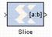

|
|
This block is listed in the following Xilinx Blockset libraries: Basic Elements, Control Logic, Data Types, and IndexThe Xilinx Slice block allows you to slice off a sequence of bits from your input data and create a new data value. This value is presented as the output from the block. The output data type is unsigned with its binary point at zero.The block provides several mechanisms by which the sequence of bits can be specified. If the input type is known at the time of parameterization, the various mechanisms do not offer any gain in functionality. If, however, a Slice block is used in a design where the input data width or binary point position are subject to change, the variety of mechanisms becomes useful. The block can be configured, for example, always to extract only the top bit of the input, or only the integral bits, or only the first three fractional bits. The following diagram illustrates how to extract all but the top 16 and bottom 8 bits of the input.